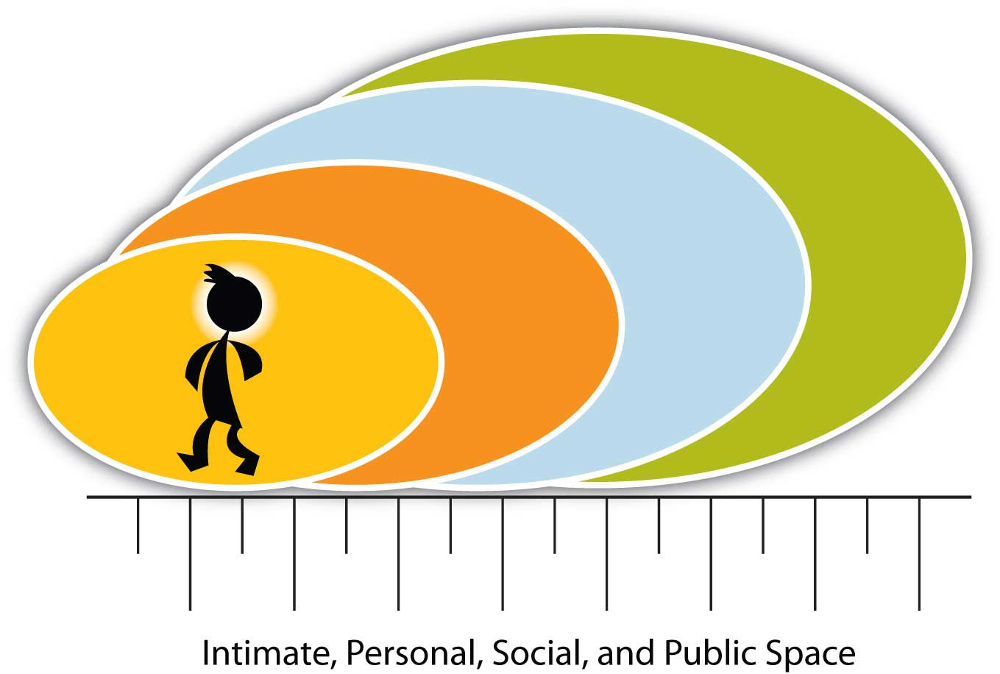

Now that we have discussed the general principles that apply to nonverbal communication, let’s examine eight types of nonverbal communication to further understand this challenging aspect of communication:
When we discuss space in a nonverbal context, we mean the space between objects and people. Space is often associated with social rank and is an important part of business communication. Who gets the corner office? Why is the head of the table important and who gets to sit there?
People from diverse cultures may have different normative space expectations. If you are from a large urban area, having people stand close to you may be normal. If you are from a rural area or a culture where people expect more space, someone may be standing “too close” for comfort and not know it.
Edward T. Hall, serving in the European and South Pacific Regions in the Corps of Engineers during World War II, traveled around the globe. As he moved from one place to another, he noticed that people in different countries kept different distances from each other. In France, they stood closer to each other than they did in England. Hall wondered why that was and began to study what he called proxemicsThe study of the human use of space and distance in communication., or the study of the human use of space and distance in communication.Hall, E. T. (1963). Proxemics: The study of man’s spacial relations and boundaries. In I. Galdston (Ed.), Man’s image in medicine and anthropology (pp. 422–45). New York, NY: International Universities Press.
In The Hidden Dimension, he indicated there are two main aspects of space: territory and personal space. Hall drew on anthropology to address the concepts of dominance and submission and noted that the more powerful person often claims more space. This plays an important role in modern society, from who gets the corner office to how we negotiate space between vehicles. Road rage is increasingly common where overcrowding occurs, and as more vehicles occupy the same roads, tensions over space are predictable.
Territory is related to control. As a way of establishing control over your own room, maybe you painted it your favorite color or put up posters that represent your interests or things you consider unique about yourself. Families or households often mark their space by putting up fences or walls around their houses. This sense of a right to control your space is implicit in territory. TerritoryThe space you claim as your own, are responsible for, or are willing to defend. means the space you claim as your own, are responsible for, or are willing to defend.
The second aspect Hall highlights is personal spaceThe “bubble” of space surrounding each individual., or the “bubble” of space surrounding each individual. As you walk down a flight of stairs, which side do you choose? We may choose the right side because we’ve learned that is what is expected, and people coming up the same stair choose their right. The right choice insures that personal space is not compromised. But what happens when some comes up the wrong side? They violate the understood rules of movement and often correct themselves. But what happens if they don’t change lanes as people move up and down the stairs? They may get dirty looks or even get bumped as people in the crowd handle the invasion of “their” space. There are no lane markers, and bubbles of space around each person move with them, allowing for the possibility of collision.
We recognize the basic need for personal space, but the normative expectations for space vary greatly by culture. You may perceive that in your home people sleep one to each bed, but in many cultures people sleep two or more to a bed and it is considered normal. If you were to share that bed, you might feel uncomfortable, while someone raised with group sleeping norms might feel uncomfortable sleeping alone. From where you stand in an aerobics class in relation to others, to where you place your book bag in class, your personal expectations of space are often at variance with others.
Figure 4.5 Space: Four Main Categories of Distance
As the context of a staircase has norms for nonverbal behavior, so does the public speaking context. In North America, eye contact with the audience is expected. Big movements and gestures are not generally expected and can be distracting. The speaker occupies a space on the “stage,” even if it’s in front of the class. When you occupy that space, the audience will expect to behave in certain ways. If you talk to the screen behind you while displaying a PowerPoint presentation, the audience may perceive that you are not paying attention to them. Speakers are expected to pay attention to, and interact with, the audience, even if in the feedback is primarily nonverbal. Your movements should coordinate with the tone, rhythm, and content of your speech. Pacing back and forth, keeping your hands in your pockets, or crossing your arms may communicate nervousness, or even defensiveness, and detract from your speech.
As a general rule, try to act naturally, as if you were telling a friend a story, so that your body will relax and your nonverbal gestures will come more naturally. Practice is key to your level of comfort; the more practice you get, the more comfortable and less intimidating it will seem to you.
Hall articulated four main categories of distance used in communication as shown in Figure 4.5 "Space: Four Main Categories of Distance".Hall, E. (1966). The hidden dimension. New York, NY: Doubleday.
Do you know what time it is? How aware you are of time varies by culture and normative expectations of adherence (or ignorance) of time. Some people, and the communities and cultures they represent, are very time-oriented. The Euro Railways trains in Germany are famous for departing and arriving according to the schedule. In contrast, if you take the train in Argentina, you’ll find that the schedule is more of an approximation of when the train will leave or arrive.
“Time is money” is a common saying across many cultures and reveals a high value for time. In social contexts, it often reveals social status and power. Who are you willing to wait for? A doctor for an office visit when you are sick? A potential employer for a job interview? Your significant other or children? Sometimes we get impatient, and our impatience underscores our value for time.
When you give a presentation, does your audience have to wait for you? Time is a relevant factor of the communication process in your speech. The best way to show your audience respect is to honor the time expectation associated with your speech. Always try to stop speaking before the audience stops listening; if the audience perceives that you have “gone over time,” they will be less willing to listen. This in turn will have a negative impact on your ability to communicate your message.
Suppose you are presenting a speech that has three main points. Your audience expects you to regulate the time and attention to each point, but if you spend all your time on the first two points and rush through the third, your speech won’t be balanced and will lose rhythm. The speaker occupies a position of some power, but it is the audience that gives them that position. By displaying respect and maintaining balance, you will move through your points more effectively.
ChronemicsThe study of how we refer to and perceive time. is the study of how we refer to and perceive time. Tom Bruneau at Radford University has spent a lifetime investigating how time interacts in communication and culture.Bruneau, T. (1974). Time and nonverbal communication. Journal of Poplular Culture, 8, 658–66.,Bruneau, T. (1990). Chronemics: The study of time in human interaction. In J. DeVito & M. Hecht (Eds.), The nonverbal reader (pp. 301–11). Prospect Heights, IL: Waveland Press.,Bruneau, T., & Ishii, S. (1988). Communicative silence: East and west. World Communication, 17, 1–33. As he notes, across Western society, time is often considered the equivalent of money. The value of speed is highly prized in some societies.Schwartz, T. (1989, January/February). Acceleration syndrome: Does everyone live in the fast lane? Utne Reader, 31, 36–43. In others, there is a great respect for slowing down and taking a long-term view of time.
When you order a meal at a fast food restaurant, what are your expectations for how long you will have to wait? When you order a pizza online for delivery, when do you expect it will arrive? If you order cable service for your home, when do you expect it might be delivered? In the first case, you might measure the delivery of a hamburger in a matter of seconds or minutes, and perhaps thirty minutes for pizza delivery, but you may measure the time from your order to working cable in days or even weeks. You may even have to be at your home from 8 a.m. to noon, waiting for its installation. The expectations vary by context, and we often grow frustrated in a time-sensitive culture when the delivery does not match our expectations.
In the same way, how long should it take to respond to a customer’s request for assistance or information? If they call on the phone, how long should they be on hold? How soon should they expect a response to an e-mail? As a skilled business communicator, you will know to anticipate normative expectations and do your best to meet those expectations more quickly than anticipated. Your prompt reply or offer of help in response to a request, even if you cannot solve the issue on the spot, is often regarded positively, contributing to the formation of positive communication interactions.
Across cultures the value of time may vary. Some Mexican American friends may invite you to a barbecue at 8 p.m., but when you arrive you are the first guest, because it is understood that the gathering actually doesn’t start until after 9 p.m. Similarly in France, an 8 p.m. party invitation would be understood to indicate you should arrive around 8:30, but in Sweden 8 p.m. means 8 p.m., and latecomers may not be welcome. Some Native Americans, particularly elders, speak in well-measured phrases and take long pauses between phrases. They do not hurry their speech or compete for their turn, knowing no one will interrupt them.McLean, S. (1998). Turn-taking and the extended pause: A study of interpersonal communication styles across generations on the Warm Springs Indian reservation. In K. S. Sitaram & M. Prosser (Eds.), Civic discourse: Multiculturalsim, cultural diversity, and global communication (pp. 213–27). Stamford, CT: Ablex Publishing Company. Some Orthodox Jews observe religious days when they do not work, cook, drive, or use electricity. People around the world have different ways of expressing value for time.
You didn’t choose your birth, your eye color, the natural color of your hair, or your height, but people spend millions every year trying to change their physical characteristics. You can get colored contacts; dye your hair; and if you are shorter than you’d like to be, buy shoes to raise your stature a couple of inches. You won’t be able to change your birth, and no matter how much you stoop to appear shorter, you won’t change your height until time and age gradually makes itself apparent. If you are tall, you might find the correct shoe size, pant length, or even the length of mattress a challenge, but there are rewards. Have you ever heard that taller people get paid more?Burnham, T., & Phelan, J. (2000). Mean genes: From sex to money to food: Taming our primal instincts. Cambridge, MA: Perseus. There is some truth to that idea. There is also some truth to the notion that people prefer symmetrical faces (where both sides are equal) over asymmetrical faces (with unequal sides; like a crooked nose or having one eye or ear slightly higher than the other).Burnham, T., & Phelan, J. (2000). Mean genes: From sex to money to food: Taming our primal instincts. Cambridge, MA: Perseus.
We often make judgments about a person’s personality or behavior based on physical characteristics, and researchers are quick to note that those judgments are often inaccurate.Wells, W., & Siegel, B. (1961). Stereotypes somatypes. Psychological Reports, 8, 77–78.,Cash, T., & Kilcullen, R. (1985). The eye of the beholder: Susceptibility to sexism and beautyism in the evaluation of managerial applicants. Journal of Applied Social Psychology, 15, 591–605. Regardless of your eye or hair color, or even how tall you are, being comfortable with yourself is an important part of your presentation. Act naturally and consider aspects of your presentation you can control in order to maximize a positive image for the audience.
The study of body movements, called kinesicsThe study of body movements., is key to understanding nonverbal communication. Since your actions will significantly contribute to the effectiveness of your business interactions, let’s examine four distinct body movements that complement, repeat, regulate, or replace your verbal messages.
Body movements can complement the verbal message by reinforcing the main idea. For example, you may be providing an orientation presentation to a customer about a software program. As you say, “Click on this tab,” you may also initiate that action. Your verbal and nonverbal messages reinforce each other. You can also reinforce the message by repeating it. If you first say, “Click on the tab,” and then motion with your hand to the right, indicating that the customer should move the cursor arrow with the mouse to the tab, your repetition can help the listener understand the message.
In addition to repeating your message, body movements can also regulate conversations. Nodding your head to indicate that you are listening may encourage the customer to continue asking questions. Holding your hand up, palm out, may signal them to stop and provide a pause where you can start to answer.
Body movements also substitute or replace verbal messages. Ekman and Friesen found that facial features communicate to others our feelings, but our body movements often reveal how intensely we experience those feelings.Ekman, P., & Friesen, W. (1967). Head and body cures in the judgment of emotions: A reformulation. Perceptual and Motor Skills, 24, 711–24. For example, if the customer makes a face of frustration while trying to use the software program, they may need assistance. If they push away from the computer and separate themselves physically from interacting with it, they may be extremely frustrated. Learning to gauge feelings and their intensity as expressed by customers takes time and patience, and your attention to them will improve your ability to facilitate positive interactions.
Touch in communication interaction is called hapticsTouch in communication interaction., and William Seiler and Melissa BeallSeiler, W., & Beall, M. (2000). Communication: Making connections (4th ed.). Boston, MA: Allyn & Bacon. identify five distinct types of touch, from impersonal to intimate, as listed in Table 4.4 "Types of Touch".
Table 4.4 Types of Touch
| Term | Definition |
|---|---|
| 1. Functional-professional touch | Medical examination, physical therapy, sports coach, music teacher |
| 2. Social-polite touch | Handshake |
| 3. Friendship-warmth touch | Hug |
| 4. Love-intimacy touch | Kiss between family members or romantic partners |
| 5. Sexual-arousal touch | Sexual caressing and intercourse |
Touch can show warmth, love and caring for another. In a workplace setting, a social-polite touch, such as a handshake, shows you are friendly and open to doing business with the other person.
Much of our nonverbal communication comes from those things that are not said. Learning how to read body language can help us become better communicators.
Paralanguage is the exception to the definition of nonverbal communication. You may recall that we defined nonverbal communication as not involving words, but paralanguage exists when we are speaking, using words. ParalanguageInvolves verbal and nonverbal aspects of speech that influence meaning, including tone, intensity, pausing, and silence. involves verbal and nonverbal aspects of speech that influence meaning, including tone, intensity, pausing, and even silence.
Perhaps you’ve also heard of a pregnant pauseA silence between verbal messages that is full of meaning., a silence between verbal messages that is full of meaning. The meaning itself may be hard to understand or decipher, but it is there nonetheless. For example, your coworker Jan comes back from a sales meeting speechless and with a ghost-white complexion. You may ask if the meeting went all right. “Well, ahh…” may be the only response you get. The pause speaks volumes. Something happened, though you may not know what. It could be personal if Jan’s report was not well received, or it could be more systemic, like the news that sales figures are off by 40 percent and pink slips may not be far behind.
Silence or vocal pauses can communicate hesitation, indicate the need to gather thought, or serve as a sign of respect. Keith Basso quotes an anonymous source as stating, “It is not the case that a man who is silent says nothing.”Basso, K. A. (1970). To give up on words: Silence in western Apache culture. In D. Carbaugh (Ed.), Cultural communication and intercultural contact (pp. 301–18). Hillsdale, NJ: Laurence Erlbaum. Sometimes we learn just as much, or even more, from what a person does not say as what they do say. In addition, both Basso and Susan Philips found that traditional speech among Native Americans places a special emphasis on silence.Philips, S. (1983). The invisible culture: Communication in the classroom and community on the Warm Springs Indian Reservation. Chicago, IL: Waveland Press.
Do you cover your tattoos when you are at work? Do you know someone who does? Or perhaps you know someone who has a tattoo and does not need to cover it up on their job? Expectations vary a great deal, but body art or tattoos are still controversial in the workplace. According to the San Diego Union-Tribune,Kinsman, M. (2001, August 20). Tattoos and nose rings. San Diego Union-Tribune, p. C1.
In your line of work, a tattoo might be an important visual aid, or it might detract from your effectiveness as a business communicator. Body piercings may express individuality, but you need to consider how they will be interpreted by employers and customers.
ArtifactsNonverbal representations of communication. are forms of decorative ornamentation that are chosen to represent self-concept. They can include rings and tattoos but may also include brand names and logos. From clothes to cars, watches, briefcases, purses, and even eyeglasses, what we choose to surround ourselves with communicates something about our sense of self. They may project gender, role or position, class or status, personality, and group membership or affiliation. Paying attention to others’ artifacts can give you a sense of the self they want to communicate.
How many times do we hear “we didn’t communicate” or “it was a miscommunication”? Even though we are all aware of the importance communication plays in our work-life, somehow these types of issues still happen. Communication applies to human relations in that communication is really the only means we have of expressing ourselves to others. In other words, every relationship you have built has relied on communication for it to be successful. Those relationships that may have been unsuccessful could have resulted from not understanding each other’s communication style. As you already know from this chapter, communication relates to relationship management skills as well as social awareness skills, which are part of emotional intelligence. These are the skills that allow us to communicate with others and handle various personalities and work styles. For example, when your roommate or significant other comes home from work, it doesn’t take but a second or two to see this person has had a bad day. Their facial expressions and the way they talk all point to a challenge at work. Social awareness skills help you understand this, empathize with that person, and bring up bad news—such as the fact rent is due—at a later time. These types of skills, or ability to handle social situations well, is what creates positive communication in our relationships.
The first step to applying communication skills is to first understand your own style. Are you direct or indirect? Do you know how your facial expressions and other nonverbal language impact your verbal communication? When you write an e-mail, how does your communication style come across to others? Understanding (self-awareness emotional intelligence skill) our own style can help us understand our strengths and weaknesses and become better communicators. Every successful relationship—work or personal—relies on good, open, and honest communication.
EnvironmentInvolves the physical and psychological aspects of the communication context. involves the physical and psychological aspects of the communication context. More than the tables and chairs in an office, environment is an important part of the dynamic communication process. The perception of one’s environment influences one’s reaction to it. For example, Google is famous for its work environment, with spaces created for physical activity and even in-house food service around the clock. The expense is no doubt considerable, but Google’s actions speak volumes. The results produced in the environment, designed to facilitate creativity, interaction, and collaboration, are worth the effort.